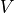
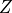
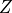

Output variables¶
The exact outputs of a given simulation depend on which physical models are enabled, the Additional outputs defined on the Output widget, and certain component-specific outputs This chapter serves as a reference of some of the more complex output variables.
Additional output¶
Distance Traveled by Fluid¶
Sometimes, the distance that a fluid particle has traveled is important to know. In FLOW-3D , the user can request output for the distance traveled by fluid on the widget. The feature computes the initial time or from the time at which the fluid enters the flow domain (either through boundaries or mass sources), the distance that a volume of fluid has traveled through the domain. This feature can be used with any simulation, and does not require any special models to be used, nor does it affect the flow. To use this model, navigate to the Output widget, and within the Additional output section, check the box next to Distance traveled by fluid.
Note
The Additional output section is available on all tabs of the Output widget.
Fluid arrival time¶
It is often useful to know the fluid arrival time; for example, in casting simulations it can be used to determine the filling time. Because a control volume fills and then empties many times during a filling process both the first and the last times a computational cell is filled can be recorded and stored for post-processing. This is done in the Output widget, and within the Additional output section by checking the Fluid arrival time check box.
Note
This output option is only available for one-fluid, free-surface flows.
Fluid residence time¶
It is sometimes useful to know the time that fluid spends within the
computational domain – the Residence Time. This is done by selecting the
check box.
A transport equation is solved for this variable, designated here
as  , with a unit source term:
, with a unit source term:
where  is time, and
is time, and  is the fluid velocity.
is the fluid velocity.
The units of are time. The initial value of for any fluid
entering the computational domain is zero. The value of is always approximated from the data with a second-order
accurate scheme.
This output option is available for both one- and two-fluid flows.
Note
The residence can appear to decrease when fluid entering the domain from a boundary condition or source mixes with fluid that was already in the domain.
Wall Contact Time¶
The Wall Contact Time output tracks (1) how long an individual fluid element is in contact with a specified component and (2) how long a specified component is in contact with the fluid. The model is intended to provide a proxy variable that is correlated to the contamination of liquid metal when it is in contact with a sand mold. This output can then be used to see where the contaminated fluid will reside in the final casting. Another interpretation of the contact time model is the contamination of water in a river by a submerged object that emits, for example, through dissolution, of a chemical at a more or less constant rate.
The model is enabled by checking the box. Additionally, there is a Contact time flag that must be set for each component in the section in order for that component to be included in the calculation.
See also
See Wall Contact Time with Fluid and Component Properties: Contact Time with Fluid for more information on the input variables.
Note
This model is limited to real components, i.e. solids, porous media, core gas, and packed sediment components. The contact time is calculated only in relation to fluid #1.
Geometry Data¶

{kind=link}
Component wetted area¶
The surface area of a component that is in contact with Fluid 1 can be output to the History Data by enabling the option for the components of interest.
Forces and torques on components¶
Forces¶
The pressure, shear, elastic, and wall adhesion forces on components can be output in the History Data by enabling the option.
There are some additional options for the pressure force calculation
controlling how cells that do not have a pressure (i.e. cells that are outside
of the domain or inside another component) are treated during the summation of
the pressure-area product for each cell around the component. The default
behavior is to use a user-defined Reference pressure in these
cells. If unspecified, the Reference pressure will default to the
initial void pressure, PVOID. Alternatively, the code can use the
average pressure on the exposed surface of the component by choosing the
Reference pressure is code calculated option.
Finally, for General Moving Objects there is an additional output of a residual force representing the force to move the object as prescribed / constrained.
Torques¶
The torque on a component is also calculated and output in the History Data when the option is enabled. The torque is taken about the point specified by the X of reference point for force-moment, Y of reference point for force-moment, and Z of reference point for force-moment inputs for stationary components. The default location for the reference point is the origin.
There are a couple of additional notes for General Moving Objects: first, the torque is reported about either (1) the center of mass location for 6-DOF motion or (2) about the rotation axis/point for fixed-axis and fixed-point rotation. Like is done with Forces there is also an output of a residual torque representing the torque to move the object as prescribed / constrained.
Note
Force and torque outputs are written to the the General history data for each geometry component. Outputs are provided as both the individual force / torque contributions (e.g., pressure, shear, elastic, wall adhesion), and as a total combined force / torque calculated as the sum of the indivudual contributions.
Buoyancy center and metacentric height¶
Information about the buoyancy and stability of General Moving Objects can be output in the History Data by enabling the option for each component. This will output the location of the component’s center of bouyancy as well as the metacentric height.
Advanced¶
{kind=link}
Fluid vorticity & Q-criterion¶
Activate the Fluid vorticity & Q-criterion by clicking on the respective check box on the tab when it is desired to compute and export the vorticity components as well as Q-criterion for vorticity structure:
where:
- , , are the different components of the vorticity vector
 .
.
The Q-criterion defines a vortex as a connected fluid region with a positive second invariant of the velocity gradient tensor. It represents the local balance between shear strain rate and vorticity magnitude, defining vortices as areas where the vorticity magnitude is greater than the magnitude of rate- of-strain.
Hydraulic Data and Total Hydraulic Head 3D¶
Hydraulic Data¶
To request depth-averaged Hydraulic Data, go to , and check the box next to Hydraulic data (depth averaged values and assuming gravity in -Z direction).
This option causes FLOW-3D to output additional depth averaged data that may be useful for hydraulic simulations, including:
- Flow depth
- Maximum flow depth
- Free surface elevation
- Velocity
- Offset velocity
- Froude number
- Specific hydraulic head
- Total hydraulic head
One value for each of these quantities is computed at every (x,y) location
in the mesh and stored for every cell in the vertical column (because these
quantities are depth-averaged, there is no variation of the data in the
z-direction). The variables are calculated every cycle to ensure accuracy.
In all cases,  is the depth-averaged velocity,  is the
acceleration of gravity in the z-direction,
is the
acceleration of gravity in the z-direction,  is the fluid depth,
and  is the minimum z-coordinate of the fluid in the column.
is the fluid depth,
and  is the minimum z-coordinate of the fluid in the column.
- The Free surface elevation is computed as the z-coordinate of the free surface in the topmost fluid element in a vertical column.
- The Froude number is computed from
 .
. - The Fluid depth is computed as the sum of all fluid in the depth averaged mesh column.
- The variables Specific hydraulic head () and Total hydraulic head () are calculated from: and ,
Note
- The depth-averaged hydraulic output options are only valid for fluid 1 when there is a sharp interface and gravity is oriented in negative z-direction.
- It should be kept in mind that the hydraulic head calculations assume that the streamlines are parallel. This can be an issue if, for example, a flux surface is placed in a region of recirculating flow. In this case, the flux-averaged hydraulic head reported at the flux surface may be larger than expected because the flow direction is ignored in the calculation of the head.
Total Hydraulic Head 3D¶
Additionally, the Total hydraulic head 3D option can be checked to compute the total head in fluid 1 using the local (3D) velocity field, the hydraulic energy at flux surfaces (see Baffles), and the flux-averaged hydraulic head at flux surfaces. The 3D calculation is done using the local pressure (i.e. it does not assume that the pressure is related to the fluid depth) and is compatible with cylindrical coordinates.
Note
- It should be kept in mind that the hydraulic head calculations assume that the streamlines are parallel. This can be an issue if, for example, a flux surface is placed in a region of recirculating flow. In this case, the flux-averaged hydraulic head reported at the flux surface may be larger than expected because the flow direction is ignored in the calculation of the head.
- The 3D hydraulic head calculation assumes that the magnitude of the gravity vector is one when gravity is not defined in the input file.
Flux-averaged hydraulic head¶
The flux-averaged hydraulic head at a particular location (i.e., baffle) is computed as:
where
- is the flux-averaged hydraulic head
 is the volume flow rate at a face of the flux surface (the product of the fluid fraction, the area, and the velocity).
is the volume flow rate at a face of the flux surface (the product of the fluid fraction, the area, and the velocity).![h = \frac{1}{\rho g}\left[ (P - P_{void} ) + \rho \frac{u^2}{2} + z \right]](_images/math/9185ccb0a50b5b8d9b49ccc9705920af882c0dbd.png)
 is the fluid density.
is the fluid density.- is the potential energy (gravity times height).
- is the void pressure.
It should be kept in mind that the hydraulic head calculations assume that the streamlines are parallel. This can be an issue if, for example, a flux surface is placed in a region of recirculating flow, (e.g., like what is shown below):
{kind=link}
In this case, the flux-averaged hydraulic head reported at the flux surface may be larger than expected because the flow direction is ignored in the calculation of the head.
Measurement Device Outputs¶
There are three main measurement devices in FLOW-3D : History Probes,
Flux surfaces, and Sampling Volumes. Steps on how to add these devices
to a simulation are are described in the model setup section (See Measurement devices).
Their output is stored in the General history data catalog of the flsgrf file
at the History Data edit time intervals. These results can be accessed by creating Probe Plots
in the tabs.
History Probe Outputs¶
Steps to create history probes are described in the model setup section (See History Probes). Depending on the physics models used in the simulation, different output is available at each history probe. If a probe is specified as FSI/TSE, it will only provides stress/strain data at that location which should fall inside the finite element mesh. If a fluid probe is located inside area blocked by a solid geometry component, then only quantities related to the geometry (e.g., wall temperature) will be computed. Usually an interpolation is required to compute these quantities at the location defined by the probe coordinates.
Flux Surface Outputs¶
Flux surfaces are special objects that are used to measure the flow of quantities through them. Steps to create flux surfaces are described in the model setup section (See Flux surfaces). The computed quantities for each flux surface include:
- Volume flow rate for fluid #1
- Volume flow rate for fluid #2 (for two-fluid problems only)
- Combined volume flow rate (for two-fluid problems only)
- Total mass flow rate
- Flux surface area wetted by fluid #1
- Flux-averaged hydraulic head when 3D Hydraulic Head is requested from additional output options
- Hydraulic energy flow when hydraulic data output is requested
- Total number of particles of each defined species in each particle class crossing flux surface when the particle model is active
- Flow rate for all active and passive scalars this includes scalar quantities associated with active physical models (eg. suspended sediment, air entrainment, ect.)
Note
- The signs of the flow rate and particle count are positive when the flow or a particle crosses from the negative side of the flux surface to the positive side, as defined by the sign of the function describing the flux surface.
- Flux surfaces should have at least two mesh cells between them for the flow rate and particle count of each surface to be accurate.
- When using the Hydraulic Data and Total Hydraulic Head 3D option it should be kept in mind that the hydraulic head calculations assume that the streamlines are parallel. This can be an issue if, for example, a flux surface is placed in a region of recirculating flow. In this case, the flux-averaged hydraulic head reported at the flux surface may be larger than expected because the flow direction is ignored in the calculation of the head.
Sampling Volume Outputs¶
Sampling volumes are three dimensional data collection regions that measure volumetric quantities within their bounds. Steps to create sampling volumes are described in the model setup section (See Sampling Volumes). The computed quantities for each sampling volume include:
- Total volume of fluid #1 within the sampling volume
- Center of mass of fluid #1 within the sampling volume
- Hydraulic forces and moments relative to the origin of the coordinate system acting on all wall boundaries within the sampling volume, including solid surfaces that are located at the sampling volume edges.
- Total amount of scalar species within the sampling volume: this is calculated as a volume integral, so if a scalar quantity represents mass concentration, then the total mass within the sampling volume is computed. For some species, like the residence time, an average value is computed instead.
- Number of particles within the sampling volume: number of particles of each defined species in each particle class that are currently inside each sampling volume (when the particle model is active).
- Mass averages for the kinetic energy, turbulent energy, turbulent dissipation rate, and vorticity
- Heat flow rates at each of the six boundaries of a sampling volume: these
include fluid convection, conduction in fluid and solid components and
fluid/component heat transfer. The sign of each flux is determined by the
coordinate direction, for example, heat flux in the positive x-direction is
also positive. These are not automatically plotted in
flspltunless Expanded or Maximum debug level is selected in Output.
FLOW-3D and TruVOF are registered trademarks in the USA and other countries.